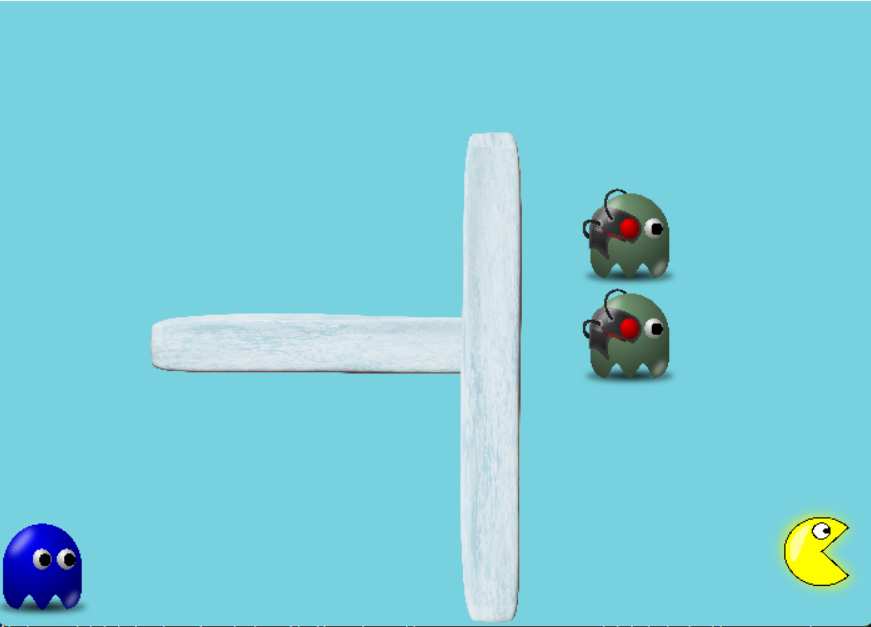
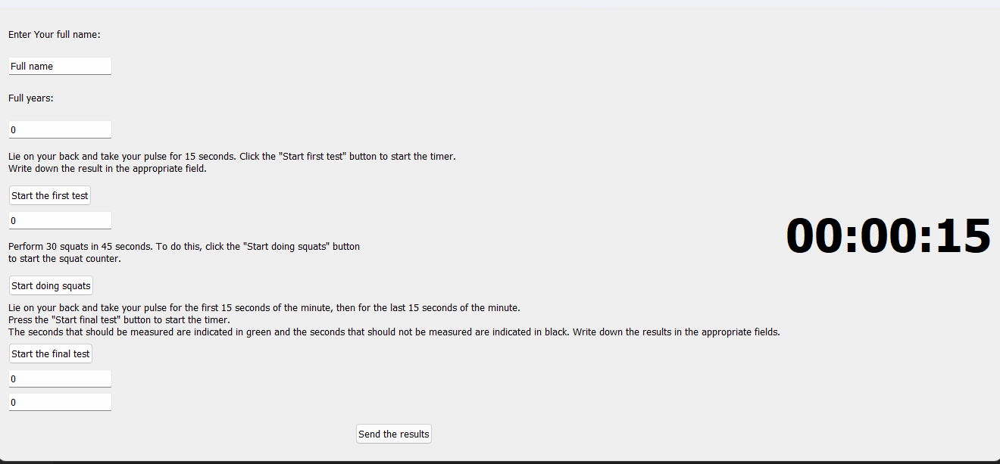
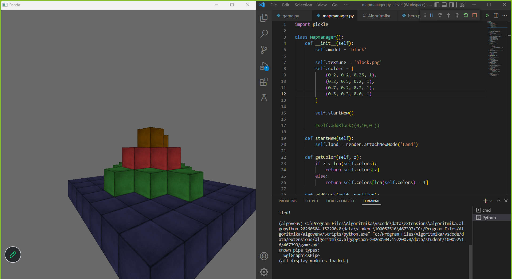
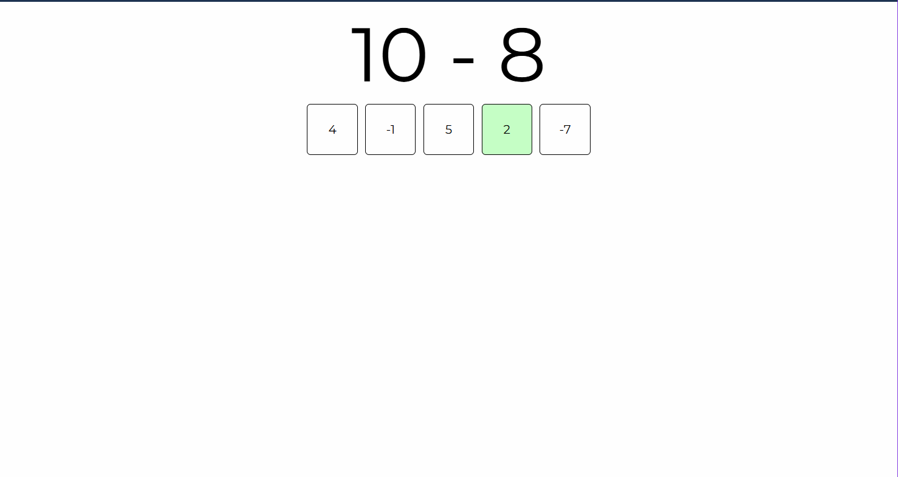

Maze game

This project marks my debut in game development with the creation
of an interactive maze game, built using the Python programming
language and the Pygame library. By leveraging Pygame's robust
capabilities for 2D graphics and real-time input handling, I have
successfully implemented core game mechanics, including layout
design, player movement controls, and collision detection to keep
the character within the tracks. Beyond the technical coding, this
initial project has provided me with essential, hands-on experience
in managing fundamental game loops and state logic, serving as a
solid stepping stone for me to explore more complex mechanics and
advanced game development concepts in the future.
Source code
Ruffier

This project represents my first venture into desktop application
development through the creation of a Ruffier Test application,
built using Python and the PyQt5 framework. The application
digitizes the traditional Ruffier fitness assessment, providing a
streamlined graphical user interface (GUI) that guides users
through the physical stress test, inputs cardiac data, and
automatically calculates their cardiovascular endurance index. By
leveraging PyQt5, I implemented a clean, responsive desktop layout
while managing user event handling, precise data validation, and
real-time result processing. This project has given me essential,
hands-on experience in desktop GUI architecture, state management,
and user-centric design, establishing a solid foundation for
building more advanced desktop and data-driven applications in the
future.
Source code
Minecraft 3D

Building upon my foundational development skills, this project is a
3D Minecraft-inspired game that marks my transition into
three-dimensional environments using Python and the Panda3D engine.
By leveraging Panda3D’s powerful rendering capabilities, I
implemented a dynamic voxel-based world where players can interact
with a 3D grid system to place and destroy blocks. The core
mechanics involved handling complex 3D coordinate mapping,
optimized chunk loading for performance, and custom texture mapping
onto 3D primitives to achieve the classic blocky aesthetic.
Developing this project has significantly expanded my expertise in
game development, providing me with critical, hands-on experience
in 3D math, spatial logic, and asset rendering pipelines.
Source code
Quiz game

This latest project is an interactive math quiz game designed to
provide a fast-paced, engaging learning experience directly in the
web browser using a front-end stack of HTML5, CSS3, and
JavaScript. The application features dynamic question generation,
real-time score tracking, and an interactive timer to challenge
players, all driven by custom JavaScript logic for state management
and DOM manipulation. By implementing a clean, responsive UI with
CSS, the game ensures seamless accessibility across both desktop
and mobile screens. Developing this project has allowed me to
sharpen my client-side web development skills, deeply enhancing my
understanding of event-driven programming, user interface
responsiveness, and clean codebase organization.
Source code